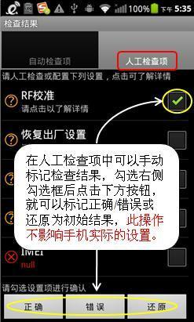

图标说明
 |
检查项结果正确，符合SOP要求 |
 |
检查项结果错误，不符合SOP要求 |
| 检查项结果未知，需要人工进行检查和确认 |
CTSC(CMCC Testing Self Checking)送测手机检查是在厂商准备样机寄送到中国移动前，协助厂商检查手机默认配置是否正确。“默认配置”是指重新download过版本或恢复出厂设置后的设置。
CTSC（送测手机检查）基本功能：
检查结果界面的使用
1. 人工检查项 -> 勾选已完成人工检查的检查项 -> 如果确认检查项正确，点击“正确”按钮 -> 如果确认检查项错误，点击“错误”按钮 -> 如果需要放弃已确认的结果，点击“还原”按钮

2. 选项菜单 -> 全部勾选 -> 勾选当前Tab界面上的全部检查项
3. 选项菜单 -> 全部取消勾选 -> 取消勾选当前Tab界面上的全部检查项
4. 选项菜单 -> 检查报告 -> 所选测试类型的检查报告界面
导出设置检查报告
进入检查报告界面 -> 导出检查报告
检查报告导出路径：storage/sdcard0/ConfigureCheck/CheckReport_[日期]_[IMEI].csv
|
检查项结果正确，符合SOP要求 |
|
检查项结果错误，不符合SOP要求 |
| 检查项结果未知，需要人工进行检查和确认 |